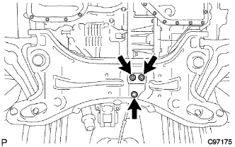

Front suspension arm SUB-ASSY LWR No.1 LH (4WD) Remove |
reference| 1. Front suspension arm SUB-ASSY LWR No.1 LH inspection |
Jack up the front of the vehicle.
 |
Sprinkle up and down with the power of the hand (294N {30kgf} or higher) to confirm that there is no rattling in the ball joint.
| 2. Remove the front tire |
Take off the front tire.
| 3. Remove the front stabilizer bolt |
Fix the front stabilizer bolt with a spanner (10mm) and remove the two nuts.
Remove four front stabilizer barceds reteners No. 1, 4 front stabilizer cushions, front stabilizer bar cushion retainer No.2 and front stabilizer bolt.
 |
The other side is removed in the same procedure.
| 4. Front suspension Menbarin horsement LH is removed |
Remove the two bolts and remove the front suspension Menbarin Housing LH.
| 5. Front suspension Menbarin horsement RH is removed |
| 6. Front suspension arm SUB-ASSY LWR No.1 LH |
 |
Loosen the bolt (A).
Fix the nut and loosen the bolt (b).
Remove the clip and castle nut.
 |
Use the SST to separate the ball joint of the rower arm from the steering knuckle.
|  |
Remove two bolts and nuts and separate the engine mounting insulator RR.
Support the suspension cross member in mission jacks.
Loosen the four bolts at the position in the figure.
 |
Use a horn axis flash screwdriver to press the bottom of the mission with the suspension cross member as a fulcrum to secure a gap in the bolt (front side).
Remove the bolt (a), (b) and nuts and remove the suspension rower arm.